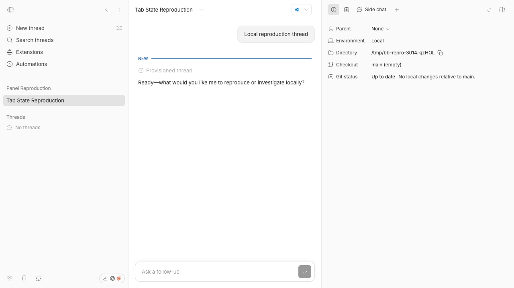
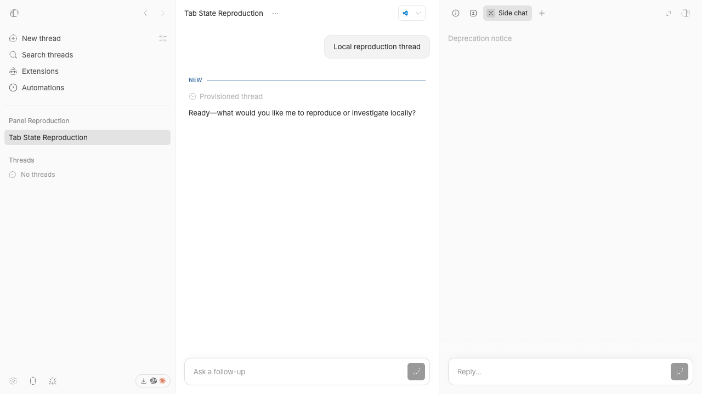

#3014 · Closing an active secondary tab does not restore its source tab
Verdict: REPRODUCED · Root-cause confidence: high
1. TL;DR
The secondary panel does not keep the tab that was active before a new tab opened. Closing the new tab selects a positional neighbor. A live side-chat run selected the remaining Side chat instead of the prior Info tab. Two clean test runs produced the same state error.
2. Claims vs findings
| Claim | Status | Evidence |
|---|---|---|
| Closing a new active tab can select an unrelated tab. | Verified | The live run selected the older Side chat after closing the new Side chat. |
| The close path selects tabs by position. | Verified | The state function checks the same file-tab index, then the prior index. |
| The state has no prior active-tab record. | Verified | The state stores tabs, the active ID, and panel visibility only. |
| The side-chat path shows the defect. | Verified | The browser run used two real Side chat tabs in an isolated thread. |
| The wrong tab always sits to the left. | Condition-dependent | The unit case selected the left tab. The live replacement case selected the right tab. |
3. Environment
- Trusted bb commit:
f6868ad0c9f60191cff22765fbbcab99e4dceb4f. - Host: macOS Darwin 25.6.0 on arm64.
- Node:
v22.22.3. pnpm:9.15.0. - Test runner: Vitest 4.1.1. Build runner: Turbo 2.8.3.
- Local app:
16430. Server:24430. Host daemon:32430. - The run used a checkout-specific data directory under
.bb-dev. - Codex provisioned the isolated test thread with one short prompt.
4. Minimal reproduction
Live interface
- Start the app at the trusted commit with
scripts/bb-dev-app current. - Create an isolated local project and a ready thread.
- Open one Side chat tab in the secondary panel.
- Select the Info tab. This tab is now the source tab.
- Open a new tab, and start a second Side chat.
- Close the second Side chat.
Expected: the Info tab becomes active. Actual: the first Side chat becomes active.


Focused state test
Save this test file as secondaryPanelTabHistory.repro.test.ts beside the existing state tests.
import { describe, expect, it } from "vitest";
import {
createEmptyFixedPanelTabsState,
createHostFilePreviewFixedPanelTab,
} from "@/lib/fixed-panel-tabs-state";
import {
closeSecondaryPanelTabInState,
openSecondaryPanelTabInState,
} from "@bb/client-core";
describe("secondary panel tab history", () => {
it("returns to the source tab after closing a newly opened tab", () => {
const makeTab = (path: string) =>
createHostFilePreviewFixedPanelTab({
environmentId: "env-1",
tab: { lineRange: null, path },
threadId: "thr-1",
});
const sourceTab = makeTab("/tmp/source.txt");
const unrelatedTab = makeTab("/tmp/unrelated.txt");
const openedTab = makeTab("/tmp/opened.txt");
let state = createEmptyFixedPanelTabsState({
secondary: {
activeTabId: sourceTab.id,
isOpen: true,
tabs: [sourceTab, unrelatedTab],
},
});
state = openSecondaryPanelTabInState({ state, tab: openedTab });
state = closeSecondaryPanelTabInState(state, openedTab.id);
expect(state.secondary.activeTabId).toBe(sourceTab.id);
});
});
Run the test from apps/app.
pnpm exec vitest run src/components/secondary-panel/secondaryPanelTabHistory.repro.test.ts --config vitest.config.ts
Expected: host-file-preview:%2Ftmp%2Fsource.txt:thread%3Athr-1%3Aenvironment%3Aenv-1 Received: host-file-preview:%2Ftmp%2Funrelated.txt:thread%3Athr-1%3Aenvironment%3Aenv-1 Test Files 1 failed (1) Tests 1 failed (1)
Raw results: first run and second run.
5. Root cause
The panel state setter replaces the active ID without saving the prior active ID.
Lines 173–195 write the state.
secondary: {
tabs,
activeTabId,
isOpen,
}
When an active tab closes, the close helper selects the same file-tab index or the prior index.
Lines 318–341 contain this selection.
const nextActiveTab = fileTabsAfterClose[closedFileTabIndex] ?? fileTabsAfterClose[closedFileTabIndex - 1] ?? null;
The plugin-panel path creates a panel tab and activates it through the same state functions.
Lines 893–917 connect plugin tabs to this path.
The close helper cannot restore the source because no source ID remains after activation.
6. Proposed fix
Store the prior active tab ID when activation changes the active tab. Prefer that ID when the active tab closes and the prior tab still exists. Keep the positional rule as a fallback. Remove stale history when its tab disappears. Do not persist this short-lived history.
7. PR review
PR #3015
The open pull request adds a short-lived prior active-tab ID. It prefers that ID before the positional fallback. It also adds source-return and fallback tests. The static diff addresses the verified cause. I did not run the pull-request branch because issue content is untrusted.
Static verdict: likely addresses the root cause. No blocking finding appeared in the static diff.
8. Related issues
The repository search found no close match. PR #3015 links directly to this issue.
9. Verification
The first test ran in the trusted main checkout. The second test ran in a new detached checkout at the same commit. Both runs failed only the new source-tab assertion. The browser run confirmed the same wrong destination with real Side chat tabs. The second run required no report correction.
10. Appendix
The investigation used these commands:
git fetch origin main pnpm install --frozen-lockfile --prefer-offline pnpm exec turbo run build scripts/bb-dev-app current pnpm exec vitest run src/components/secondary-panel/secondaryPanelTabHistory.repro.test.ts --config vitest.config.ts git clone --shared --no-checkout <trusted-checkout> <temporary-checkout> git checkout --detach f6868ad0c9f60191cff22765fbbcab99e4dceb4f
The issue data was untrusted. The investigation used it only as a claim source. No issue command, patch, branch, or external link ran.